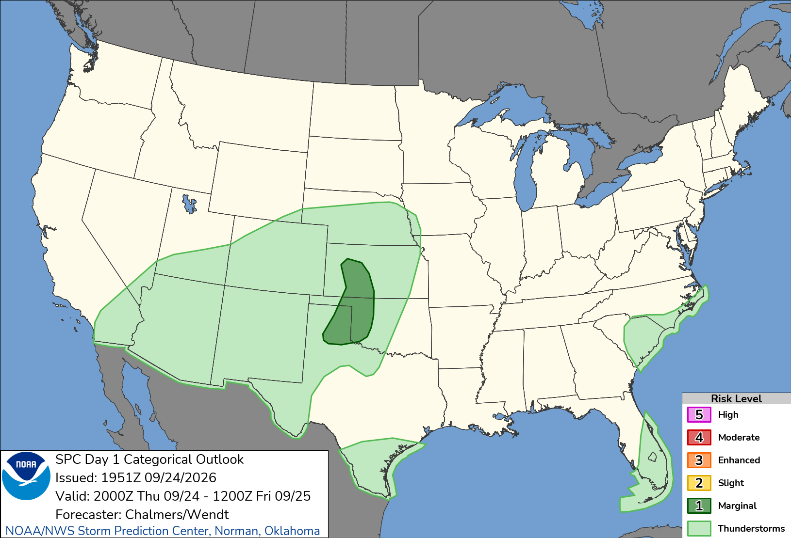
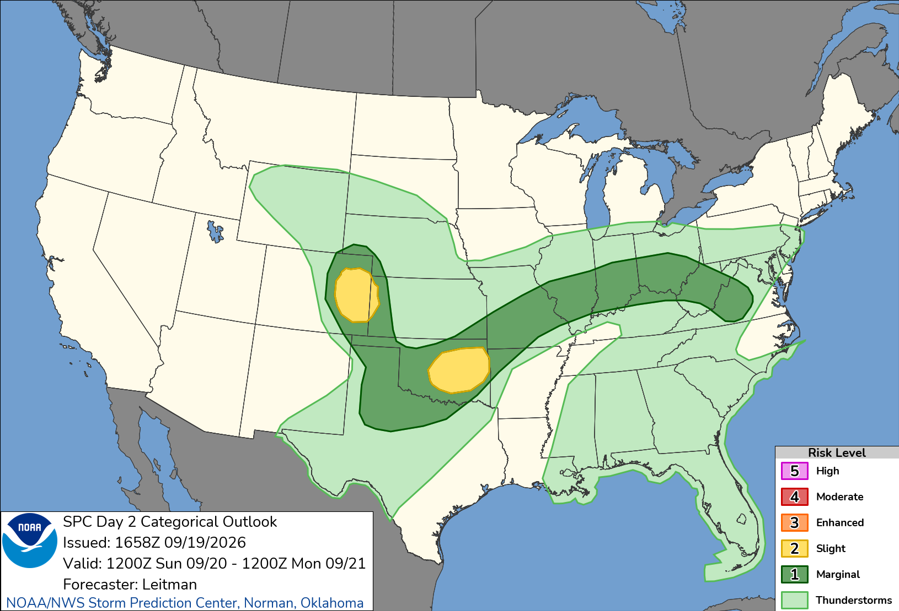
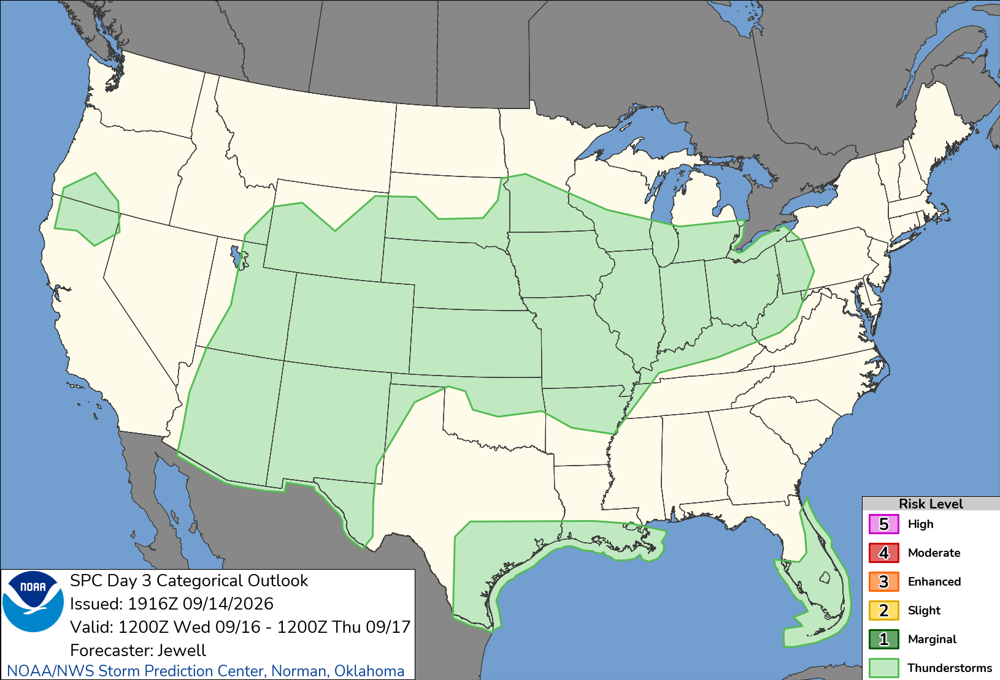

🍀
Clover Terrace Weather Station
Loading...
Station Camera
Today's Forecast
SPC Convective Outlook
Day 1
Day 2
Day 3



Updated hourly or when a new outlook is issued by NOAA's Storm Prediction Center.
Weather Map
meteoblue
Historical Data
24 Hours
2 Days
4 Days
7 Days
10 Days
Temperature & Humidity — Last 7 Days
Wind Speed & Gusts — Last 7 Days
Wind Direction — Last 7 Days
Barometric Pressure — Last 7 Days
Solar Illumination — Last 7 Days
🌪️ Refresh Now